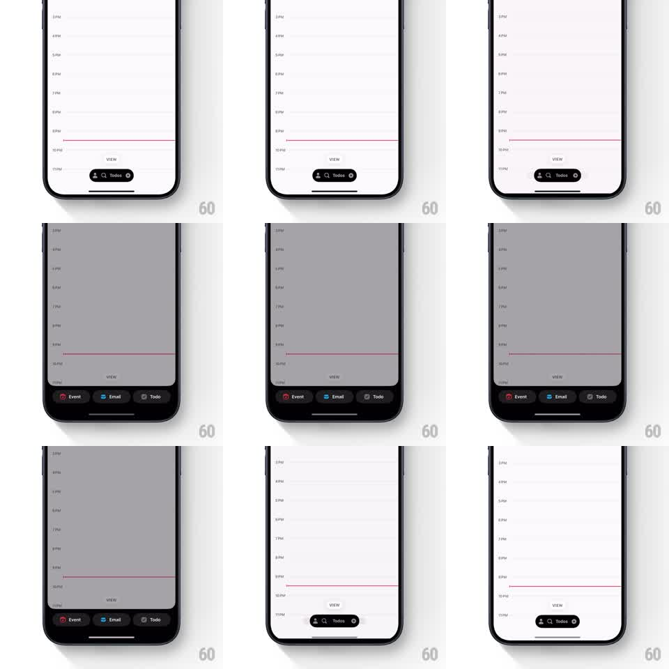

Media
Frame-by-frame

Rebuild this interaction 1:1: Amie's action menu - the bottom "Todos" pill morphs into three colorful action buttons (Event, Email, Todo) with a springy stagger while the calendar dims behind.

Rebuild this interaction 1:1: Amie's action menu - the bottom "Todos" pill morphs into three colorful action buttons (Event, Email, Todo) with a springy stagger while the calendar dims behind. ## Integration Integration: stack-agnostic spec - springs given as stiffness/damping, timed motions as duration + curve; map every value to your framework and animation library of choice. ## Scene Amie's calendar day view (hour rows, a red now-line). Docked at bottom center: a black pill labeled "Todos" with icons. On tap, the calendar dims to gray and the pill expands into a black action bar with three buttons: Event (pink/red icon), Email (blue icon), Todo (gray icon). ## Motion spec Pattern: pill-to-bar morph with staggered button pop. - Tap the pill: the background dims to 50% gray over 250ms (ease-out); simultaneously the pill stretches horizontally into the wider action bar (width and corner-radius morph over 300ms, spring ~350/26, no layout jump - it is the same view). - The three action buttons emerge inside the expanding bar: each icon pops from scale 0.4 to 1 with overshoot (spring ~500/20), staggered 50ms left to right (Event, Email, Todo), labels fading in 80ms after their icon. - The bar's top edge keeps the small "VIEW" handle area visible above it throughout. - Tap the dimmed background or drag the bar down: the sequence reverses - buttons collapse inward (40ms stagger, right to left), the bar shrinks back to the pill (280ms), and the dim lifts (250ms). - Each button press gives a color flash: the icon's tint fills the button momentarily (150ms) before the action sheet opens. ## Calibration - The morph is one continuous transform - never a crossfade between two separate views. - Stagger reads left to right on open, right to left on close. ## Reduced motion Pill and bar crossfade; buttons fade without pop. ## Don't miss - The dim only covers the calendar, not the action bar - the bar stays full-contrast. - Icon colors are the identity: pink Event, blue Email, neutral Todo.